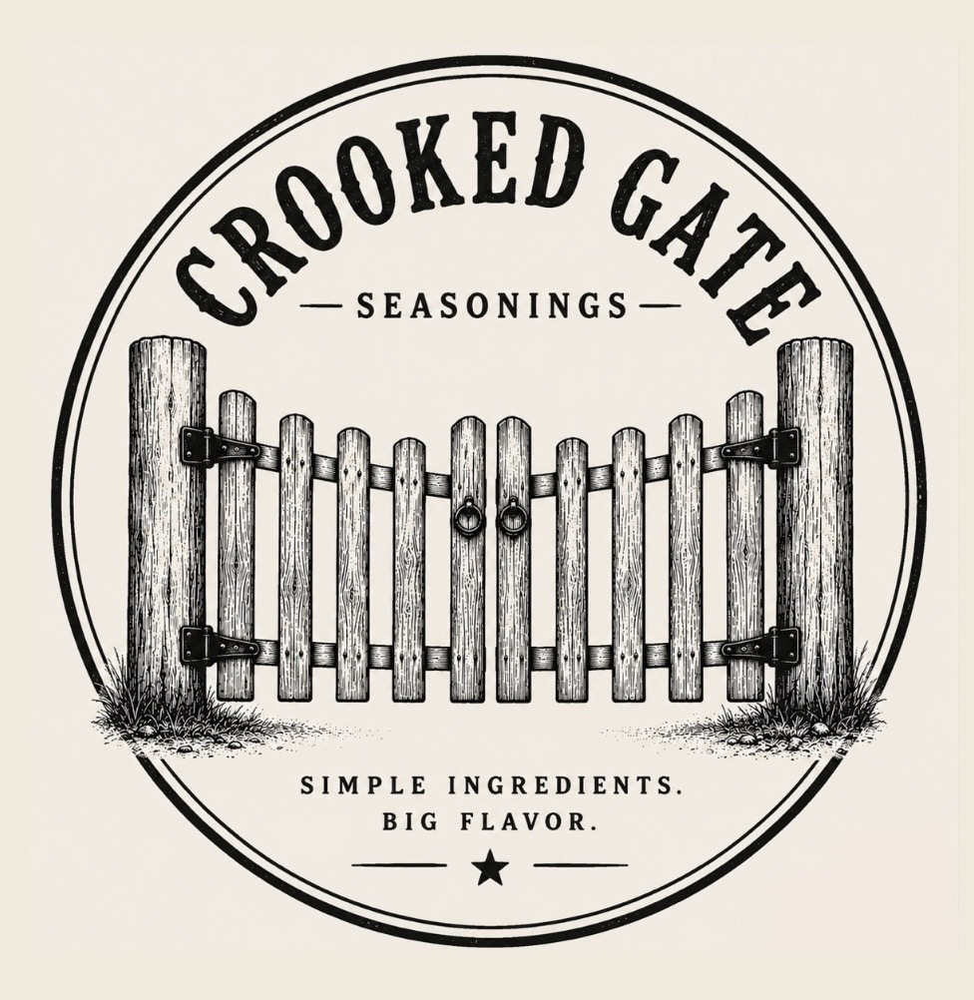
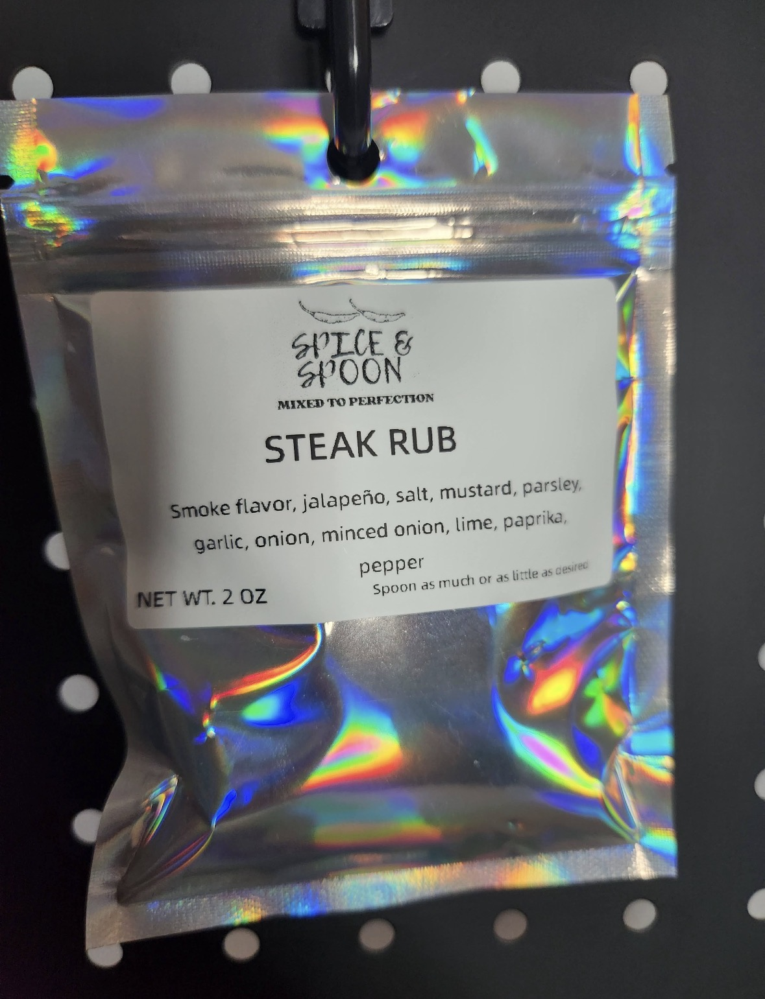
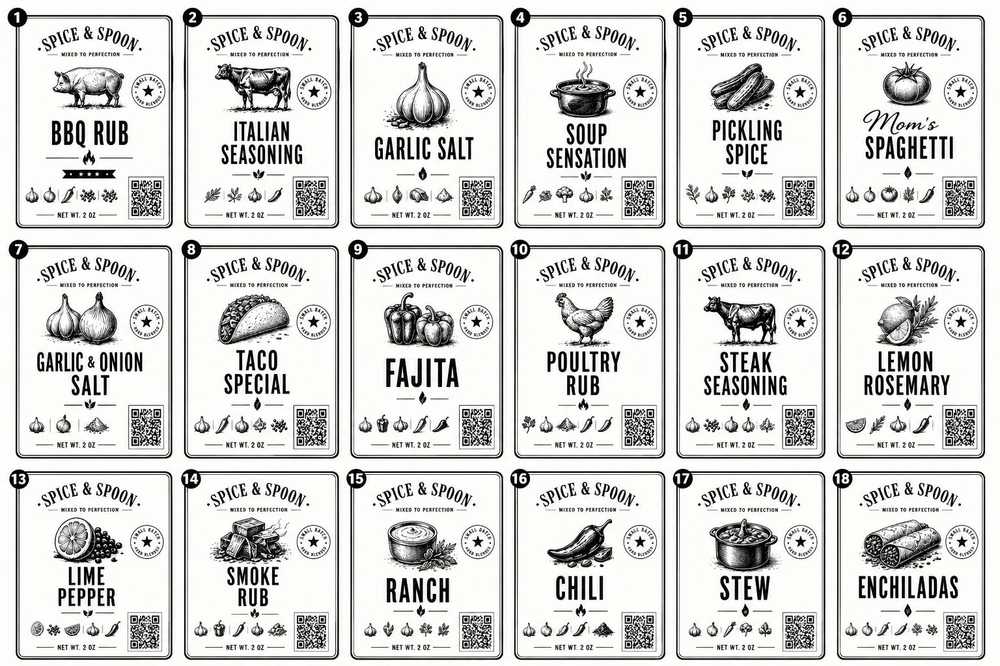
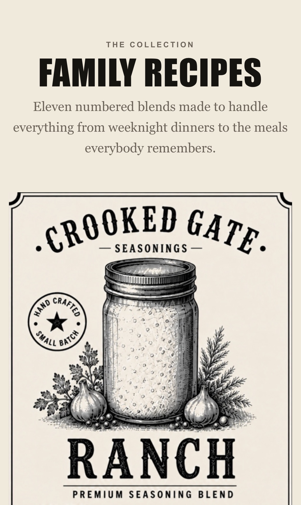
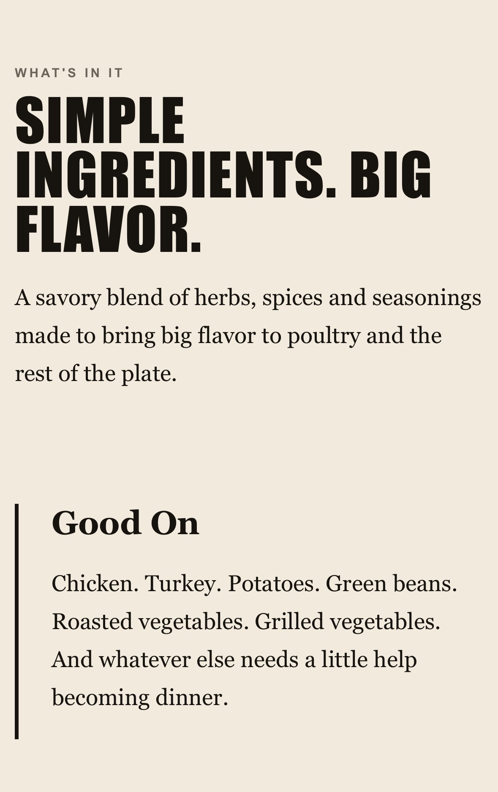
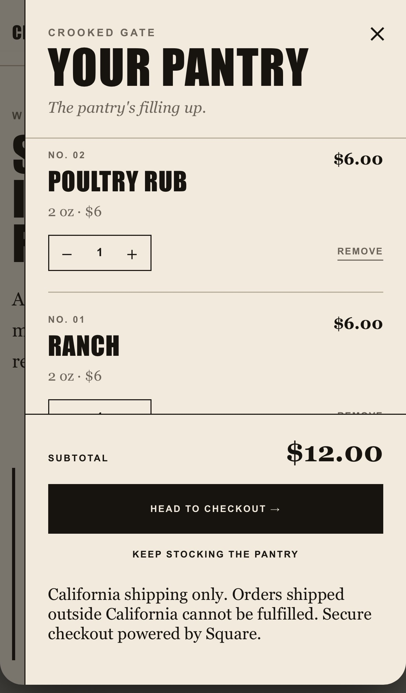

Brand
Product First.
A visual system built around the actual seasonings.
Make · Crooked Gate Seasonings
Brand. Website. Storefront. Fabrication.
Not just making something look good.
Making the whole thing work.

Before Crooked Gate

The Original
The seasonings were already real. They were already being made. They already had customers.
But the business around the product still had a lot of room to become something bigger.
The First Evolution
The individual products needed to start looking like they belonged together.
Different blends. Different personalities. One recognizable system.

Then Everything Changed
A new identity meant more than changing the name on the package.
Crooked Gate needed to feel like the same business everywhere somebody encountered it.
Labels. Products. Website. Recipes. Shopping. Checkout. Physical displays.
One system.
The Product System
Family Recipes
The products are the point.
The website was designed around the eleven numbered blends instead of treating them like thumbnails buried inside a generic online store.

Product Experience

Useful By Design
A seasoning page shouldn't make somebody guess what to do with the seasoning.
Product pages explain what each blend is, where it works and how it fits into an actual meal.
The website doesn't just display the product. It helps sell the idea of using it.
E-Commerce
Shopping Without The Bullshit
Wherever a seasoning appears on the site, customers can add it directly to The Pantry.
No unnecessary trip through another page just to buy something they already want.
Quantity controls, fulfillment, California shipping and Square checkout all live inside the same customer flow.

Underneath It
Brand
A visual system built around the actual seasonings.
Web
Designed to work from a phone without becoming a stripped-down version of the brand.
Content
Product discovery connected to the meals people can actually make with it.
Cart
A custom shopping experience built into the site.
Checkout
The custom storefront hands the order into secure Square checkout.
Fulfillment
Local pickup and California shipping built into the order flow.
And Then Make It Physical
Because apparently building the brand, website and store wasn't enough.
Fabrication
A physical display built to carry the same Crooked Gate identity into the real world.
The Point
A logo isn't a brand.
A homepage isn't a website.
A checkout button isn't a store.
The interesting part is figuring out how all of it works together — then actually making it.
See It Working
Crooked Gate is live and operating as an actual customer-facing storefront.
View Crooked Gate →